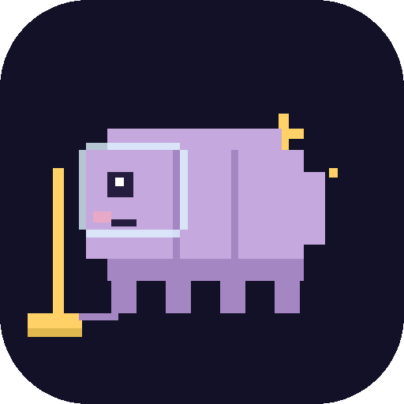
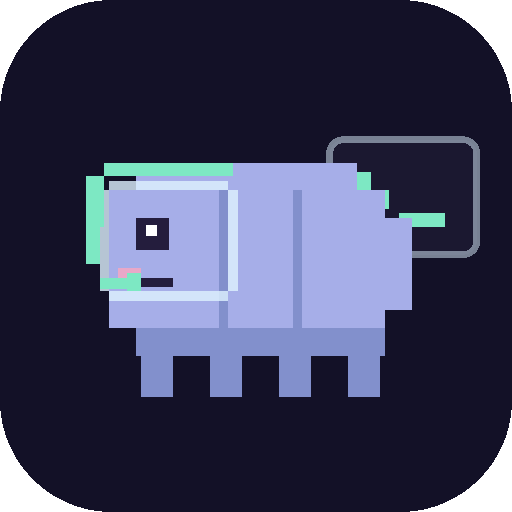
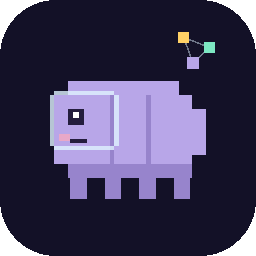

Cosmo Dev Center
COSMO TOOLS
A family of native Mac developer tools that reclaim your space — and your flow.
Native Mac apps. No telemetry. Starring a space tardigrade who has survived worse than your full disk.
THREE TOOLS, ONE CREW

Disk cleanerCosmo
Reclaim the space your dev tools left behind.
Finds Xcode DerivedData, simulators, AI-model caches, package stores, Docker disks and 150+ more targets — and moves them to the Trash, safely. Native app + scriptable CLI.

Agent workspaceAgentic
Orchestrate your AI coding sessions.
A unified workspace for Claude Code: manage git worktrees, run parallel sessions in embedded Ghostty terminals, watch diffs and PRs, and schedule automations — all in one window.

Repo wranglerFlock
Wrangle a flock of repos from the menu bar.
A menu-bar app over glab-workspace: sync a GitLab group, toggle which repos you care about, and reconcile disk state — without dropping to the terminal. Great for cross-repo grep and LLM context.